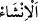
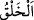
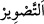
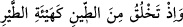

(iskelete) çevirdik;” ve onları hikmetin gerektirdiği özel şekil ve durumlarda bedene
direk/iskelet yaptık.
“Bu kemikleri” bir parçacık etten geriye kalan “etle kapladık.” Yâni bu kemiklerden
her birini kendisine uygun miktarda ve münâsip şekillerde et ile giydirdik, kapladık.
Onun üzerine damar, sinir, kılcal damarlar ve kalın sinirler çıktıktan sonra üzerlerine
tekrar et bitirdik.
“Sonra” içine ruh üfleyerek “onu başka bir yaratışla insan haline getirdik” yarattık.
“ bir şeyi var etmek ve terbiye etmek/yetiştirip geliştirmektir. Bu kelime,
çoğunlukla canlı varlıklar hakkında söylenir.
Yâni ona ruh üflendi, ölü iken canlandı. Ya da (anne karnından çıktıktan sonra) ona
diş ve kıl verdik, meme yolunu açtık; süt içme çağından sütten kesilme çağına erdirdik.
Çeşitli gıdalarla besledik. Bülûğ çağına erince ona sorumluluk yükledik. Delikanlılık,
orta yaşlılık ve ihtiyarlık mertebelerinden geçirdik.
“ (sonra)” kelimesi, iki yaratılış arasındaki farklılığın kemâlini ifâde etmek için
getirilmiştir.
Ebû Hanîfe (r.h.), bir kimse yumurta gasbetse ve onun elindeyken yumurtadan civciv
çıksa, pilici değil yumurtayı tazmin etmesi gerektiğine, çünkü onun başka bir yaratılışta
olduğuna bu ifâdeyi delil saymıştır.
el-Es’iletü’l-mukhime’de der ki: “Allah, insanı türlü merhalelerden geçirerek
yaratmıştır. Bir defada yaratsaydı kudretinin kemâli daha âşikâr ve sebeplere nisbet
etmekten daha uzak olurdu. O halde bunun mânâsı nedir? Bu sorunun cevabı şöyledir:
Hayır, aynları/asılları dönüştürerek ve şahısları yoktan var ederek tekrar tekrar yaratma
kudreti ortaya koyma bakımından daha âşikârdır. Çünkü Allah Teâlâ insanı cüzleri
birbirine benzeyen nutfeden; et, kemik, kan, deri, kıl ve diğer mertebeleri farklı,
dereceleri ayrı pek çok şeyden yaratmıştır. Sonra onlardan her bir parçaya işitme,
görme, dokunma, yürüme, tatma, koklama ve diğerleri gibi hayret verici bir terkip ve
garip bir hüner tahsis etmiştir. İşte bu, ilâhî kemâli ve kudreti ortaya koyma konusunda
daha te’sirlidir.
“Yapıp-yaratanların” yaratma bakımından ve takdir edenlerin takdir etme
bakımından “en güzeli olan Allah” her şeyi kuşatan ilmi ve sonsuz kudretinden dolayı
“pek yücedir.” “Güzel” sıfatı ise yaratılmışlara âiddir.
el-Es’iletü’l-mukhime’de der ki: “Bu âyet kulun fiillerinin yaratıcısı olduğuna ve
yaratıcılık konusunda Rabb’in ondan daha güzel olduğuna delâlet eder” denilirse, bunun
cevabı şöyledir: “Yapıp-yaratanların en güzeli” ifâdesinin mânâsı, sûret/şekil
verenlerin en güzeli demektir. Çünkü sûret veren (musavvir), sûreti mahluk/yaratılmış
sûretinde oluşturur ve şekillendirir. Fakat o sûret vermesinde Hâlık/Yaratıcı derecesine
ulaşamaz. Çünkü asla ona ruh üfleyemez. “ kelimesi Kur’an’da “ (şekil
verme)” mânâsında da vârid olmuştur. Nitekim Allah Teâlâ: “Hani, benim iznimle çamurdan kuş şeklinde bir şey yapıyordun.” (el-Mâide, 5/110)